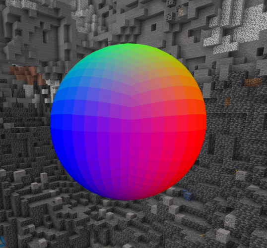
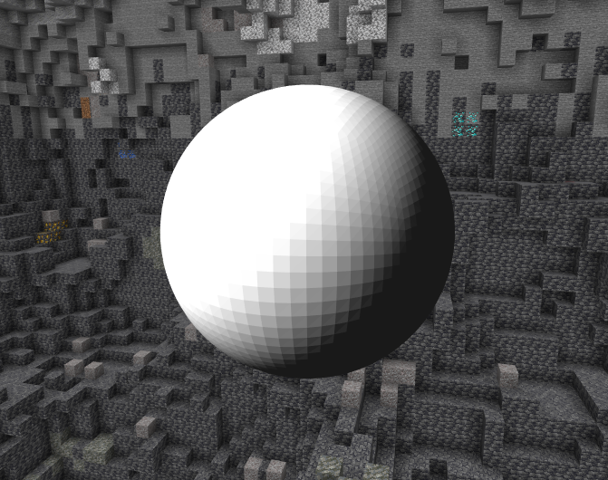
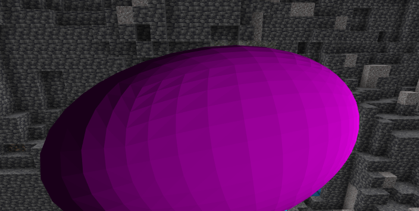
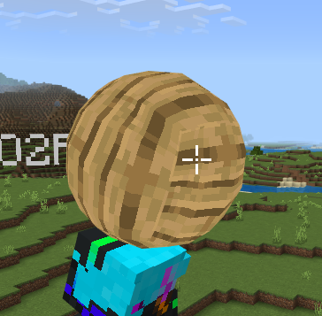

Now this one was fun.
This is a library to let people easily make their own 3d cosmetics. It turned out to be a pretty decent 3d rendering tool, with cubes, spheres, shading, textures, and rotations.
I would show people's uses of it, but apparently no one wanted to read through twenty minutes worth of documentation...
Here are some pictures of spheres generated using this lib. It uses the technique of subdividing a cube and then making all of it's vertices the same distance away from the center, deforming it into a sphere.
   A crown cosmetic I made.
Textures, animation, and cape physics, all done using the library.